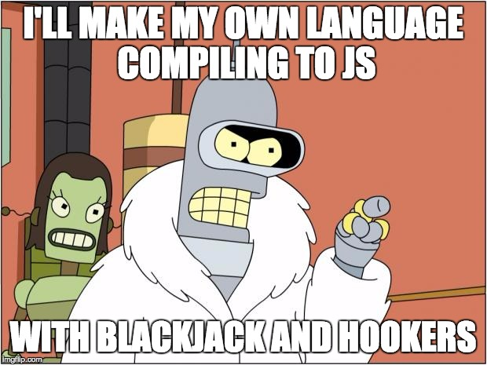
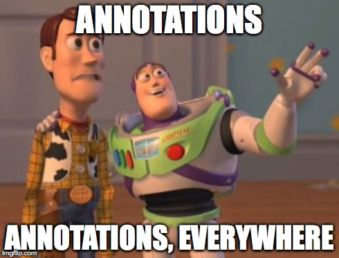

TypeScript
le JavaScript statiquement typé
Qui suis-je ?
- Benoit Lemoine
- Développeur full-stack chez Captain Dash
- @benoit_lemoine
JavaScript en 2015...
- tout le monde en fait...
- ...pour coder tout et n'importe quoi
À la mode != Pratique
TODO Img la mode WTFJavaScript c'est bien, mais...


Javascript en 2015 c'est...
... pleins de gens qui se plaignent de JavaScript
Et un site dédié : wtfjs.com
Transpilers
https://github.com/jashkenas/coffeescript/wiki/list-of-languages-that-compile-to-JS (plus de 350) TypeScript
- Made in Microsoft en 2012...
- ... mais open-source et libre (License Apache 2) : https://github.com/Microsoft/TypeScript
- Super-ensemble d'ES5
- Typage statique
- Polyfill pour ES6
Le système de type

Les types - déclarer un type
var name:string = 'Dolan';
var nbLegs:number = 2;
var isMamal = false;
//doesn't compile
//number is not assignable to type boolean
isMamal = 3;
Les types - les génériques
var featherColors:Array<string> = ['pink', 'lime', 'magenta'];
var lengthOfColors: Array<number> = featherColors.map(function(color) {
return color.length;
}); // [5, 3, 4]
Les types - Les classes
class Animal {
constructor(public name) { }
}
class Duck extends Animal {
quack() {
return "quack";
}
}
class Platypus extends Animal {
static isMamal = true;
}
var dolan:Duck = new Duck("Dolan");
console.log(dolan.quack());
Les types - Les enums
Les types - typage graduel
var scrooge = new Duck('Scrooge');
var perry = new Platypus('Perry');
//Doesn't compile Platypus is not assignable to type Duck
scrooge = perry;
//we can assign anything to any
var jokerDuck:any = perry;
//We can assign any to everything
scrooge = jokerDuck;
Les types - Les interfaces
interface Quacker {
name:string
quack():string;
}
class Goose extends Animal implements Quacker {
quack() {
return "honk";
}
}
var daffie:Quacker = new Goose("daffie");
Les types - Le typage structurel
interface Quacker {
name:string
quack():string;
}
var chicken:Quacker = {
name:'Chicken',
quack: function() {
return 'cluck cluck';
}
};
Les types - Union Type
var perry = new Platypus('Perry');
var donald = new Duck('Donald');
var animals:Array<Animal> = [perry, donald];
var duckOrPlatypus:Array<Duck|Platypus> = [perry, donald];
Pour les puristes
Le systeme de types n'est pas soundES6 - ES7
TODO image de sucreDéclaration de variable
const myVar = 2;
//ne compile pas
myVar = 3;
if(true) {
let myVar = 2;
}
//ne compile pas
console.log(myVar);
Arrow function
[1,2,3].map( value => value + 1) //vaut [2,3,4]
class JqueryController {
public myVar = 2;
constructor() {
$('#unElementDuDom').click(function() {
console.log(this.myVar); //Affiche undefined
});
$('#unElementDuDom').click( () => {
console.log(this.myVar); //Affiche 2
});
}
}
String Template
let myVar = 23
var aString = `
<div>
<span>${23}</span>
</div>
`
Autres choses
var add = function(nb1, nb2 = 0) {
return nb1 + nb2;
}
console.log(add(1,2)) // 3
console.log(add(1)) // 1
var sum = function(...nb:Array<number>) {
return nb.reduce(add, 0);
}
console.log(sum(1,2,3,4)) // 10
Le cauchemar du Javaïste
Les décorateurs
@Component({selector: 'my-app'})
@View({template: 'Hi {{ name }}
'})
// Component controller
class MyAppComponent {
constructor() {
this.name = 'Howard';
}
}
Les modules
Module interne
Module externe
Module ES6
Utiliser TypeScript avec le monde extérieur
//TODO image à la con ? Communication avec des aliens ? Sortie de bunker ?Les déclarations d'ambiance
declare var _;
_.filter([1,2,3], (i) => i%2 === 0);
Definitely Typed
http://definitelytyped.org/
/// <reference path="lodash/lodash.d.ts" />
_.filter([1, 2, 3, 4], (i) => i%2 === 0) // [2,4]
_.filter([1, 2, 3, 4], (i:string) => i%2 === 0) //ne compile pas
TSD
http://definitelytyped.org/tsd/TypeScript sur un vrai projet
List des prérequis
Module ES6 Cible ES5 Sur un framework standard aujourd'hui (Angular 1.x)Exemple Angular - Avant
angular.module('MyCtrl', ['myService','$scope',
function(myService, $scope) {
$scope.myValue = myService.maValue;
$scope.changeValue = function() {
$scope.myValue = Math.random();
};
}
])
//template
<div ng-controller="MyCtrl">
{{myValue}}
</div>
Exemple Angular - Après
class MyCtrl {
myValue:number;
static $inject = ['myService'];
constructor(myService:MyService) {
this.myValue = myService.maValue;
}
changeValue() {
this.myValue = Math.random();
}
}
angular.module(MyCtrl.name, MyCtrl);
//template
<div ng-controller="MyCtrl as myCtrl">
{{myCtrl.myValue}}
</div>
Le futur
Typescript 1.6
- Support de JSX
- Type intersection :
Duck & Hero - Class expression :
let maClass = class {} - générateurs :
function *g(): Iterable<number> { for (var i = 0; i < 100; i++) { yield i; } return 101; } - etc.
TypeScript x.x - RTTI
//TypeScript
function firstChar(word : string) {
return word.charAt(0);
}
var x : any = 3;
displayFirstCharacter(x);
//JavaScript
import * as rtts from 'rtts';
function firstChar(word) {
rtts.types(word, rtts.string);
return word.charAt(0);
}
var x = 3;
displayFirstCharacter(x);
Pourquoi choisir Typescript ?
TODO img ?Babel
Angular 2
https://angular.io/
import {Component, View, bootstrap, NgFor} from 'angular2/angular2';
@Component({selector: 'todo-list'})
@View({
template: `<ul><li *ng-for="#todo of todos">{{ todo }}</li></ul>`,
directives: [NgFor]
})
class TodoList {
todos: Array<string> = ["Eat Breakfast", "Walk Dog", "Breathe"];
constructor() {
}
}
bootstrap(TodoList);
Aurelia
http://aurelia.io/
export class Welcome{
heading:string = 'Welcome to the Aurelia Navigation App!';
firstName:string = 'John';
lastName:string = 'Doe';
get fullName(){
return `${this.firstName} ${this.lastName}`;
}
submit(){
alert(`Welcome, ${this.fullName}!`);
}
}
Les limites
- Un transpiler de plus
- La vitesse de compilation
- Les fichiers de définitions
Conclusion
- Migration Progressive
- Facilité d'apprentissage
- Compatibilité avec ES6
- Refactoring simplifié
- Assistance de l'IDE améliorée